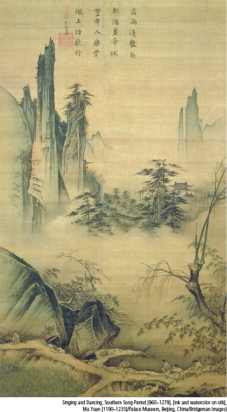

Chinese Landscape PaintingsFocused largely on mountains and water, Chinese landscape paintings were much influenced by the Daoist search for harmony with nature. Thus human figures and buildings were usually eclipsed by towering peaks, waterfalls, clouds, and trees. This thirteenth-century ink-on-silk painting illustrates that sensibility. The poem at the top reads: “Night rains cleansed the capital’s suburban farms, / Morning sun brightens the emperor’s city; / People work happily in a good year, / Dancing and singing they cross a path in the field.”(Singing and Dancing, Southern Song Period [960–1279], [ink and watercolor on silk], Ma Yuan [1190–1235]/Palace Museum, Beijing, China/Bridgeman Images)